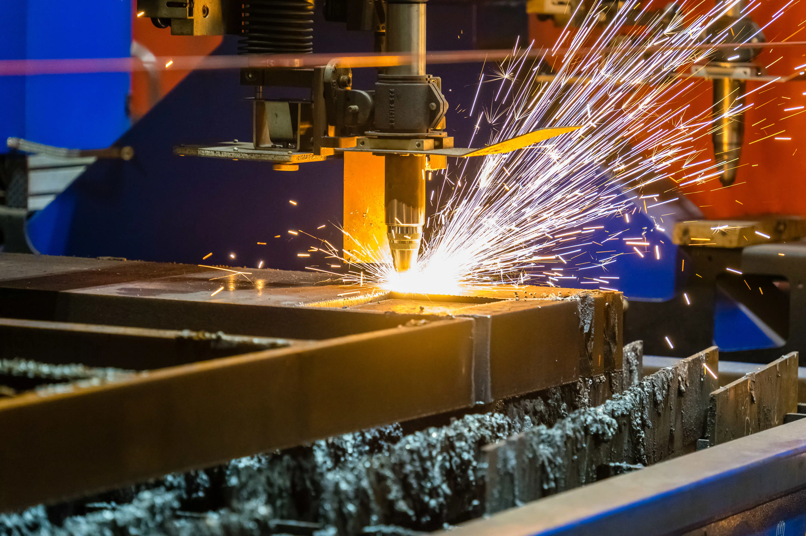
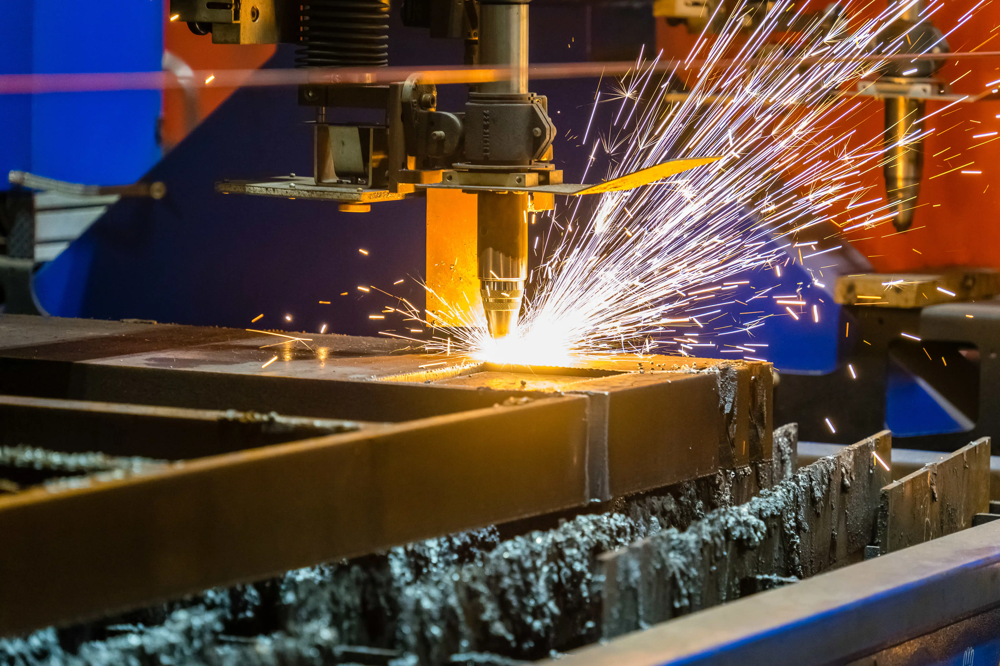

MCAC 2017 Arsenijević je renomovana firma iz Čačka specijalizovana za preciznu obradu metala. Naš tim ima više od deset godina iskustva u industriji i posvećen je kvalitetu i inovacijama.
Koristimo savremene CNC mašine, laserske sisteme za sečenje i održavanje opreme kako bismo zadovoljili sve potrebe naših klijenata. Naša misija je da pružimo profesionalne i pouzdane usluge u obradi metala, od standardnih do kompleksnih projekata.
Pružamo širok spektar usluga u obradi metala, uključujući lasersko sečenje, CNC obradu, savijanje i zavarivanje. Naš tim se stalno usavršava kako bi garantovao najviši nivo preciznosti i efikasnosti.

 



“Odlična firma! Precizna obrada metala i profesionalan pristup.”
“Brza i kvalitetna usluga, preporučujem svakome.”
“Visok nivo stručnosti i preciznosti u svakom projektu.”
“Kvalitet izrade je izvanredan, sve je urađeno na vreme.”
“Izuzetna komunikacija i transparentnost tokom celog procesa.”
“Profesionalan tim i odlična podrška nakon završetka projekta.”
“Ovo je firma kojoj se može verovati za ozbiljne projekte.”
“Moderne tehnologije i vrhunska preciznost.”
“Ponosni smo što sarađujemo sa njima.”
“Sve preporuke za kvalitet i pouzdanost.”
Adresa: Čačak, Srbija
Email: info@mca2017.rs
Telefon: +381 XX XXX XXXX